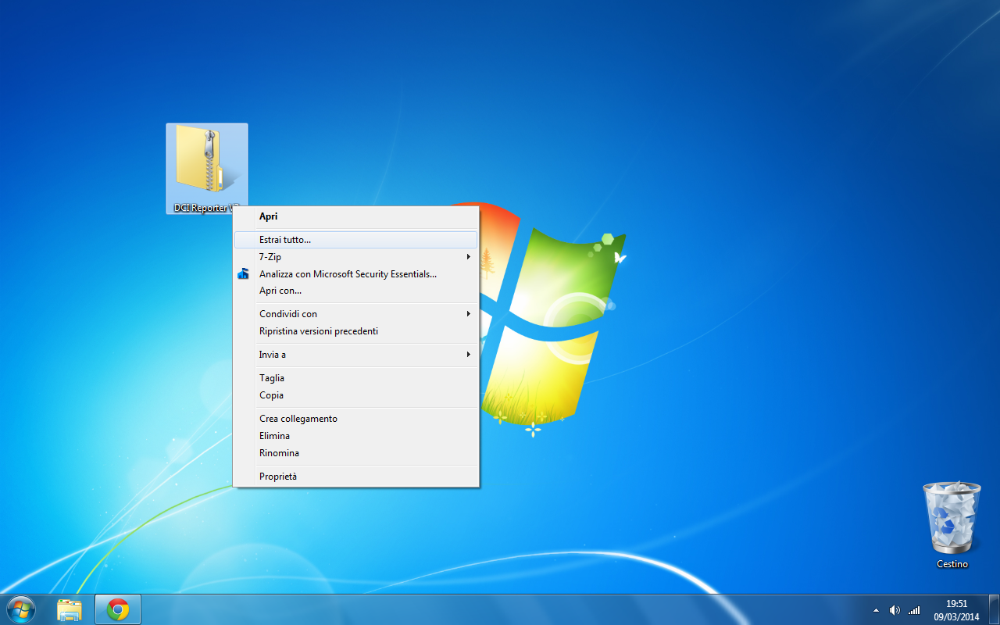
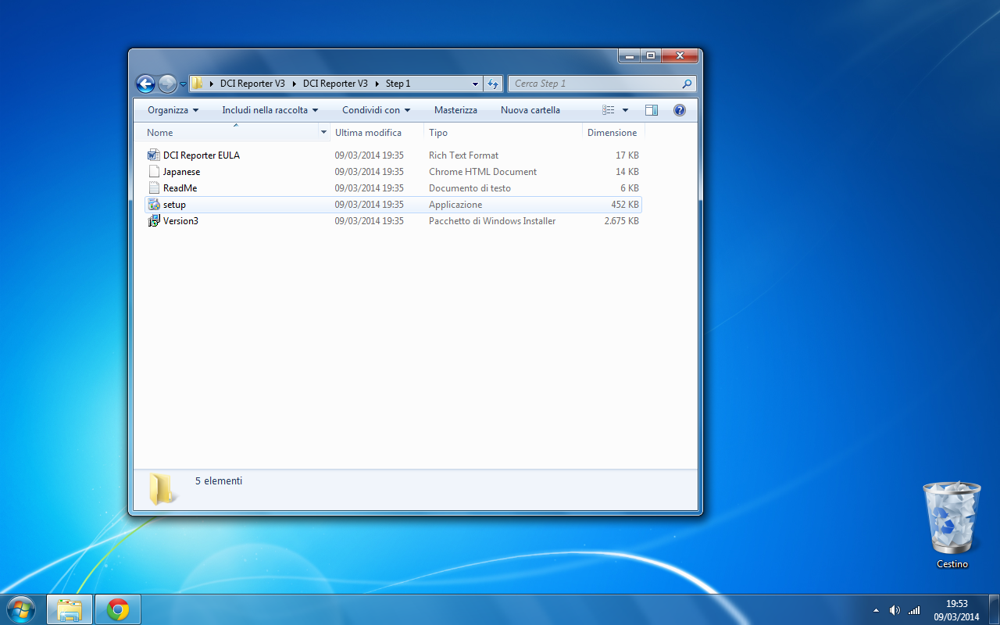
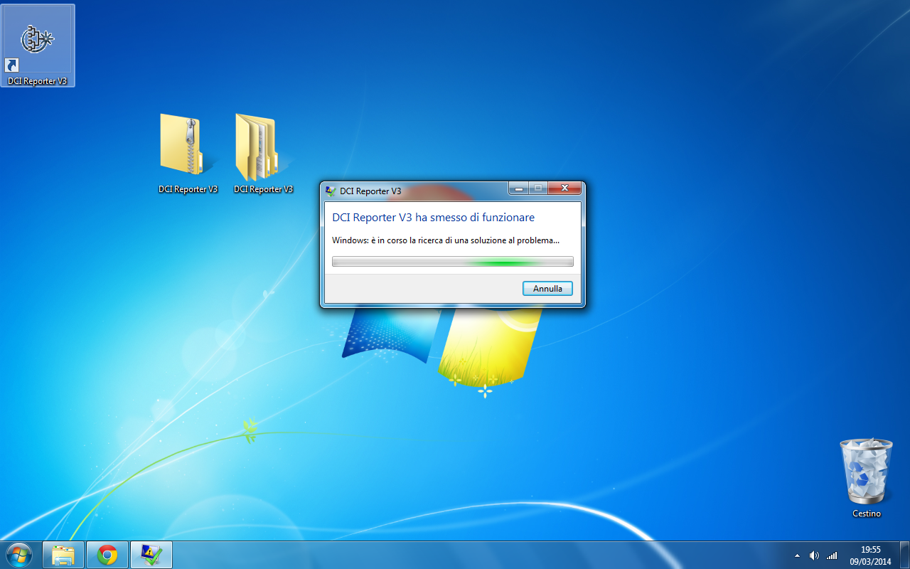
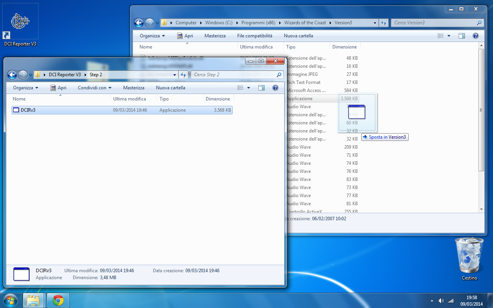
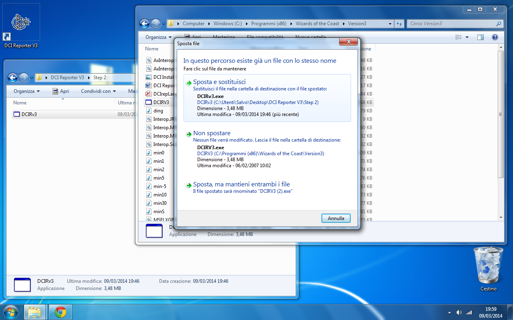
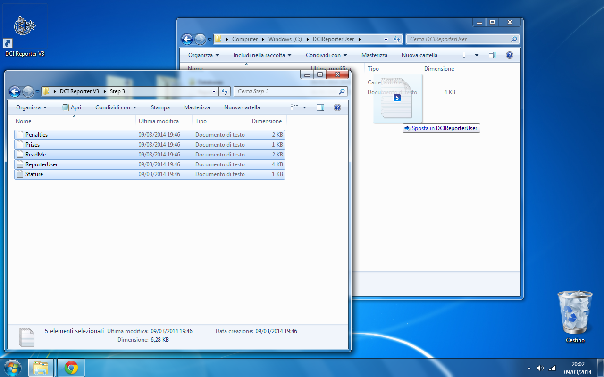
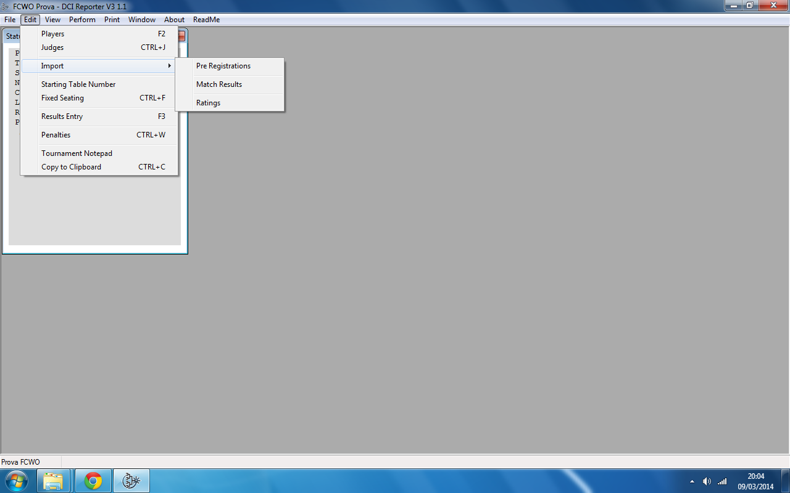

Usa i tasti freccia per sfogliare le pagine.
Il DCI Reporter V3 è il software utilizzato per gestire i PTQ.
Per prima cosa, scarica il pacchetto di installazione:
Clicca col destro sul file che hai scaricato e seleziona Estrai tutto... per scompattare il file.
Entra nella cartella che hai scompattato, e poi dentro quella chiamata Step 1, e fai doppio clic sul file setup.exe. Installa il DCI Reporter senza modificare nessuna impostazione.
Se hai un sistema operativo a 64 bit (ossia: se hai comprato il PC da meno di dieci anni), il DCI Reporter darà errore.
Dovremo sostituire il file del programma con uno modificato appositamente.
Apri la cartella di installazione del DCI Reporter, che sarà probabilmente C:\Program Files (x86)\Wizards of the Coast\Version3, e copiaci dentro il file contenuto dentro Step 2.
Windows ti chiederà se vuoi sostituire il file. Rispondi di sì.
Adesso prova ad aprire il programma.
Chiudi il DCI Reporter, ed apri la cartella C:\DCIReporterUser, che il programma crea la prima volta che lo esegui, e copiaci dentro i file che trovi dentro Step 3, sostituendo quelli già presenti.
Apri di nuovo il DCI Reporter e crea un torneo di prova cliccando su File -> Create new event. Verifica che nel menù Edit sia presente la voce Import.
